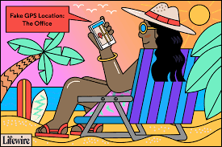

Satelite Bites
A satellite is an object that has been intentionally placed into orbit. These objects are called artificial satellites to distinguish them from natural satellites such as Earth's Moon.
Some examples below embedded with the equation for calculating receiver position from satellites
The instruments on the Landsat satellites have acquired millions of images. The images, archived in the United States and at Landsat receiving stations around the world, are a unique resource for global change research and applications in agriculture, cartography, geology, forestry, regional planning, surveillance and education, and can be viewed through the U.S. Geological Survey (USGS) 'EarthExplorer' website
receiver position: (x−A1)2+(y−B1)2+(z−C1)2−(c(t1−d))2=0
A few landsat missions
- landsat-7
- Landsat-8
Envisat was launched as an Earth observation satellite. Its objective was to service the continuity of European Remote-Sensing Satellite missions, providing additional observational parameters to improve environmental studies.
receiver position: (x−A1)2+(y−B1)2+(z−C1)2−(c(t1−d))2=0
summary
- enviromental studies
- oceanography
The Corona program was a series of American strategic reconnaissance satellites produced and operated by the Central Intelligence Agency Directorate of Science & Technology with substantial assistance from the U.S. Air Force. The Corona satellites were used for photographic surveillance of the Soviet Union (USSR), the People's Republic of China, and other areas beginning in June 1959 and ending in May 1972.
receiver position: (x−A1)2+(y−B1)2+(z−C1)2−(c(t1−d))2=0
points to note
- intelligence
- spying
- China
Data from the satellite helps scientists better understand the spread of pollution around the globe. Studies have used instruments on Terra to examine trends in global carbon monoxide and aerosol pollution.[7] The data collected by Terra will ultimately become a new, 15-year global data set.
receiver position: (x−A1)2+(y−B1)2+(z−C1)2−(c(t1−d))2=0
key points
- Terra
- aerosals
- Airpollution
satellite imaging is significant for air pollution studies
An Earth observation satellite or Earth remote sensing satellite is a satellite used or designed for Earth observation (EO) from orbit, including spy satellites and similar ones intended for non-military uses such as environmental monitoring, meteorology, cartography and others. The most common type are Earth imaging satellites, that take satellite images, analogous to aerial photographs; some EO satellites may perform remote sensing without forming pictures, such as in GNSS radio occultation.
receiver position: (x−A1)2+(y−B1)2+(z−C1)2−(c(t1−d))2=0
summary
- non-millitary
- catography
- meteorology
geospatial databases can be derived
ESA is currently developing seven missions under the Sentinel programme (Sentinel 1, 2, 3, 4, 5P, 5, 6). The Sentinel missions include radar and super-spectral imaging for land, ocean and atmospheric monitoring. Each Sentinel mission is based on a constellation of two satellites to fulfill and revisit the coverage requirements for each mission, providing robust datasets for all Copernicus services. The Sentinel missions will have the following objectives:
receiver position: (x−A1)2+(y−B1)2+(z−C1)2−(c(t1−d))2=0
summary
- vegetation
- land
- ocean

There are 50 satellites in space.There are commercial satellites too. read more here: satellites and GIS